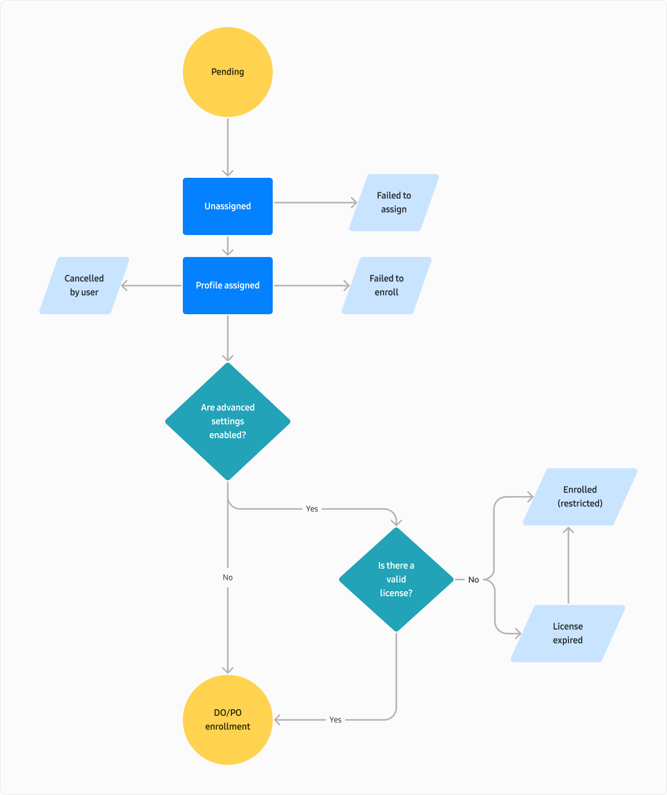

View and manage devices
Last updated December 19th, 2024
On this tab
The Devices page is where you can manage your devices once they’ve been approved in Knox Mobile Enrollment. The devices are displayed in a customizable table on the page’s ALL DEVICES tab. Alternatively, if you’d like to view all devices in Knox cloud services, click VIEW ALL DEVICES in the upper-right corner to be redirected to the Devices page on the Knox Admin Portal.
You can search for devices by their IMEI/MEID or serial number. When searching for devices, the substring you enter is acceptable only if it matches the start of the IMEI. For example, if the IMEI is 123456789, any substring that starts with 1 is a valid entry.
From the Devices page, click ACTIONS > Download devices as CSV to download details of all uploaded and approved devices.
Customize the table
Before you begin managing devices, you can customize the Devices table columns to view only relevant device information. To do so:
-
Click the ellipses (…) in the far right-hand corner of the table.
-
Select up to eight of the following column options:
Column Shows IMEI/MEID The device's unique 15-digit identification number. This column is mandatory and will always be shown in the table. Dual-SIM devices display only one of their IMEIs in the Devices table, but you can search for dual-SIM devices using either their first or second IMEI. If a device has two SIMs, both IMEIs are shown in its details.
Serial number The unique identifier assigned by the manufacturer. Order number The reference number associated with the device purchase. Wi-Fi: Device MAC address The 12-digit media access control address assigned to the device. Model The device model. Click the MODEL column to select the types of devices you'd like displayed in the table. User ID Credentials assigned to a device user. Click the USER ID column to select the users you'd like to see device details for. Tags Labels used to organize devices. Click TAGS column to filter devices by their associated tags. Submitted The date the reseller added the device. Sort in ascending or descending order by clicking the arrows. Profile Name of the profile assigned to the device. Click the PROFILE column to select the profiles for which you want to see device details. Status The current state of the device. You can filter to view devices matching the status.
View additional device details
The device details panel consolidates all device details from the Devices table, including unselected options, into a single column. From here, you can assign user credentials and tags, assign and unassign profiles, delete devices, and view when the device was last seen.
To access the device details panel, click a device’s IMEI/MEID or serial number from the table. A side panel will appear displaying all the devices details.
To access additional device information across all Knox cloud services, including the date and time the device was last seen, click the ellipses (…) in the bottom right-hand corner > View all device information.
Assign a profile to a device
To assign a profile to one or more devices:
- On the Devices page, select one or more devices you’d like to assign a profile to.
- Click Actions > Configure devices to open the device details panel. From here, you can optionally add tags and edit user credentials.
- Use the drop-down menu to select an existing profile from the list, then click SAVE.
If you assign a profile with advanced settings to a device, you must have a valid Knox Suite license to use the features. For more information, see Configure advanced settings.
Clear device profiles
To clear device profile from one or more devices:
- On the Devices page, select one or more devices.
- Click Actions > Configure devices. To use this action, you need the Assign with profile and manage tags permission. See Manage admins and roles for more information.
- In the device details side panel, select Clear profiles from the Profile drop-down menu.
- Click Save.
Delete a device
Once you remove a device, it is permanently removed from your tenant. If you accidently removed devices, contact your reseller to re-upload the devices for you.
To delete one or more devices:
- On the Devices page, select one or more devices.
- Click Actions > Delete devices.
- Click Delete.
For large device fleets, see Bulk device operations for instructions on how to assign profiles, clear profiles, and delete devices in bulk.
This document was updated for the Knox cloud services 25.01 UAT.
On this tab
The Devices page is where you can manage your devices once they’ve been approved in Knox Mobile Enrollment. The devices are displayed in a customizable table on the page’s ALL DEVICES tab. Alternatively, if you’d like to view all devices in Knox cloud services, click VIEW ALL DEVICES in the upper-right corner to be redirected to the Devices page on the Knox Admin Portal.
You can search for devices by their IMEI/MEID or serial number. When searching for devices, the substring you enter is acceptable only if it matches the start of the IMEI. For example, if the IMEI is 123456789, any substring that starts with 1 is a valid entry.
From the Devices page, click ACTIONS > Download devices as CSV to download details of all uploaded and approved devices.
Customize the Devices table
Before you begin managing devices, you can customize the Devices table columns to view only relevant device information. To do so:
-
Click the ellipses (…) in the far right-hand corner of the table.
-
Select up to eight of the following column options:
Column Shows IMEI/MEID The device's unique 15-digit identification number. This column is mandatory and will always be shown in the table. Dual-SIM devices display only one of their IMEIs in the Devices table, but you can search for dual-SIM devices using either their first or second IMEI. If a device has two SIMs, both IMEIs are shown in its details.
OS version The Android OS version running at the time of enrollment. This column is mandatory and will always be shown in the table. A warning icon will be displayed if the device is running an unsupported Android version. Click the OS VERSION column to filter devices. Click the arrows to sort in ascending or descending order. Serial number The unique identifier assigned by the manufacturer. Order number The reference number associated with the device purchase. Wi-Fi: Device MAC address The 12-digit media access control address assigned to the device. Model The device model. Click the MODEL column to select the types of devices you'd like displayed in the table. User ID Credentials assigned to a device user. Click the USER ID column to select the users you'd like to see device details for. Tags Labels used to organize devices. Click TAGS column to filter devices by their associated tags. Submitted The date the reseller added the device. Sort in ascending or descending order by clicking the arrows. Profile Name of the profile assigned to the device. Click the PROFILE column to select the profiles for which you want to see device details. Status The current state of the device. You can filter to view devices matching the status.
View additional device details
The device details panel consolidates all device details from the Devices table, including unselected options, into a single column. From here, you can assign user credentials and tags, assign and unassign profiles, delete devices, and view when the device was last seen.
To access the device details panel, click a device’s IMEI/MEID or serial number from the table. A side panel will appear displaying all the devices details.
To access additional device information across all Knox cloud services, including the date and time the device was last seen, click the ellipses (…) in the bottom right-hand corner > View all device information.
View a device’s status
The Devices table displays a STATUS column where you can see the current condition of your device.
The column can display any of the following statuses:
-
Pending — The reseller has added the device IMEIs to your console, but their device upload is pending approval.
-
Unassigned — The device isn’t assigned a profile.
-
Failed to assign — The profile couldn’t be assigned to a device. Review the profile details and try to assign the profile to the device again.
-
Profile assigned — A profile is assigned to the device, but the device user hasn’t completed the enrollment process yet. Unassigning the profile transitions the device state back to Unassigned.
-
Cancelled by user — A profile has been assigned to the device, but the device user canceled the enrollment process.
-
Failed to enroll — The device failed to enroll for reasons other than the device user canceling the process.
-
DO enrollment — The device is successfully enrolled with a Device Owner (DO) profile.
-
PO enrollment — The device is successfully enrolled with a Profile Owner (PO) profile.
For profiles with advanced settings enabled, your device status may show:
-
Enrolled (restricted) — If you don’t have an active Knox Suite - Enterprise Plan, or if you encounter conflicts with Knox Guard, the device will still enroll into the EMM, but without any advanced functionality.
-
License expired — If your Knox Suite - Enterprise Plan has expired, the device will lose all access to the advanced settings.
The diagram below illustrates a typical workflow:

Delete a device
Once you remove a device, it is permanently removed from your tenant. If you accidently removed devices, contact your reseller to re-upload the devices for you.
To delete one or more devices:
- On the Devices page, select one or more devices.
- Click Actions > Delete devices.
- Click Delete.
For large device fleets, see Bulk device operations for instructions on how to assign profiles, clear profiles, and delete devices in bulk.
Is this page helpful?
Thank you for your feedback!